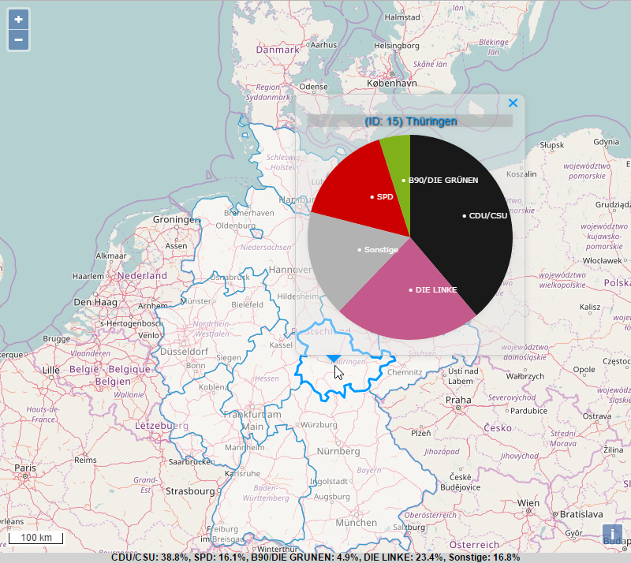

M codebox.
Election Map
 A map that shows animated charts of election results of the Bundestagswahl 2013 (German federal election). Click on a state to see the results.Charts and animations made with D3.js. Map made with OpenLayers.
Made with: *edited and fixed with mapshaper.org
Election Map 2
 A map that shows election results of the Bundestagswahl 2013.
A map that shows election results of the Bundestagswahl 2013.Map made entirely with D3.js.
It uses a topoJSON with coordinates to project the federal states.
Hover over a state to see the results.
Made with:
Map to A4
 Export a map to DIN A4 (PDF or PNG).
Export a map to DIN A4 (PDF or PNG).What You See Is What You Get. That means you can draw on the map or rotate it to landscape view. And export exactly what you see.
Made with:
Coordinate Transformer
 Easily transform coordinates from WGS84 (EPSG:4326) to Web Mercator or vice versa. Copy the results to your clipboard with a click on the button.
Easily transform coordinates from WGS84 (EPSG:4326) to Web Mercator or vice versa. Copy the results to your clipboard with a click on the button.Made with:
This
This responsive website. What you're looking at right now.Made with:
━ This page is under construction. ━